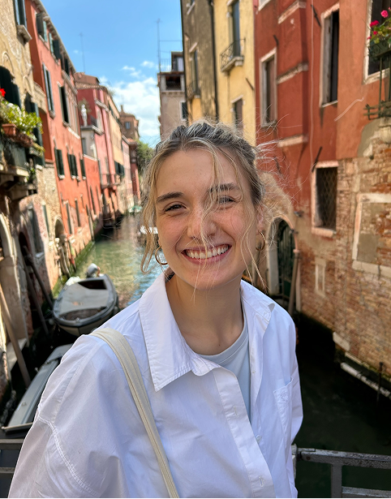
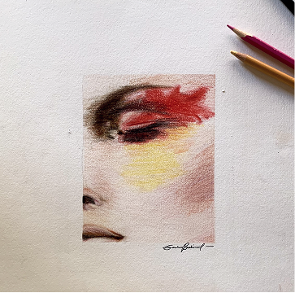
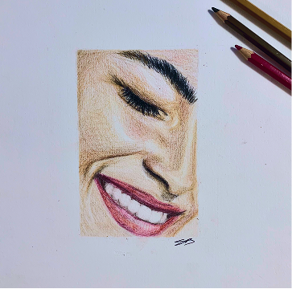
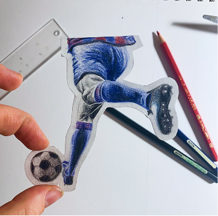
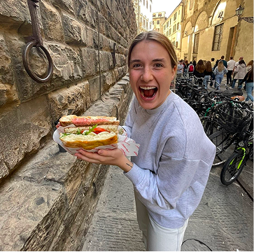
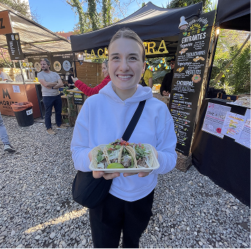
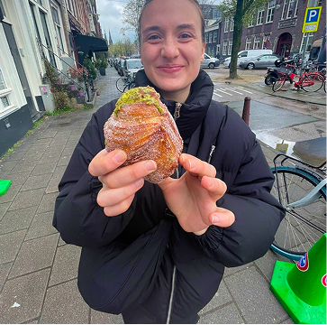

Si je suis nouvellement diplômée en design d'interaction, mon intérêt pour le design, lui, remonte à toujours.
Avec un parcours en administration des affaires, en marketing et en ressources humaines, mon cheminement est plus atypique, mais surtout complémentaire. Il m'a permis de découvrir le monde des affaires et, surtout, de réaliser l'importance de mettre ma créativité de l'avant dans différents projets.
Aujourd'hui, je souhaite concevoir des expériences qui font du sens, autant pour les utilisateurs que pour les organisations, là où je peux combiner ma capacité à créer, à résoudre des problèmes et à me mettre à la place des autres.
Mon Curriculum Vitae ↗Lorsque je ne suis pas devant mon ordinateur, je passe mon temps à dessiner, à découvrir le monde, à méditer et à profiter de chaque occasion pour déguster une bonne bouffe.






sandrine.babineau@videotron.ca | (418) 956-3771